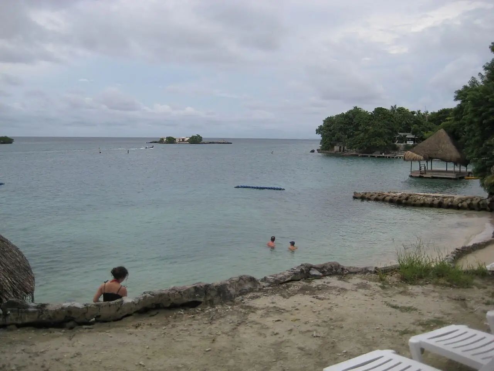

Islas del Rosario
Bolívar, Colombie · snorkeling, baignade, plongée

Archipel de récifs coralliens au sud-ouest de Carthagène, au sein du parc national Corales del Rosario y de San Bernardo. Eaux chaudes et claires pour le snorkeling, accessibles en bateau à la journée.
- Lieu
- Bolívar, Colombie
- Niveau
- Débutant
- Activités
- snorkeling, baignade, plongée
- Type d'eau
- Mer / océan
- Coordonnées
- 10.18, -75.75 (position approximative du secteur)
Dangers à connaître
- Soleil intense et peu d’ombre à bord.
- Retour en bateau souvent agité l’après-midi.
- Coraux fragiles : ne les touche pas et ne marche pas dessus.
Le conseil d'Ocean Buddy
Choisis un opérateur reconnu plutôt qu’une sortie bon marché surchargée, et emporte eau et protection solaire.
Ouvrir dans Ocean Buddy Télécharger sur l'App Store
Source : Fiche Ocean Buddy · septembre 2026 · à vérifier localement.